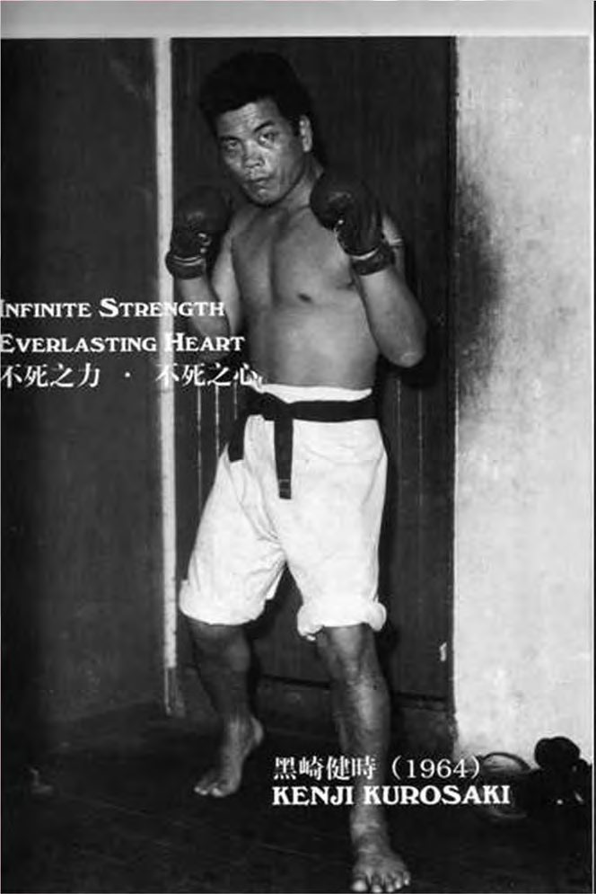
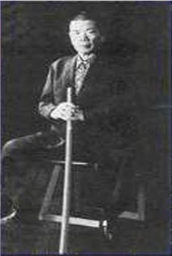

Kenji Kurosaki & the birth of kick-boxing
Sensei Kenji Kurosaki was born into a traditional samurai family. In 1953 he trained in the Goju-ryu karate of the Yamaguchi school alongside Mas Oyama. Together they created a new style, Kyokushin kaikan: Oyama handled public relations, while Kurosaki, who stayed in the background, was the instructor and the real fighter.
Kick-boxing itself was born when Nihon Kenpo karate practitioner Tatsuo Yamada became interested in Muay Thai. In 1962 he held his first sport karate event, and boxing promoter Osamu Noguchi, impressed by a Muay Thai show, wanted to organise karate against Muay Thai.
In 1963 the Oyama dojo sent three fighters to Bangkok: Kenji Kurosaki, Tadashi Nakamura and Akio Fujihira. Kurosaki was the only one to lose, but he went on to become one of the greatest coaches in kick-boxing history. In 1966 the first kick-boxing organisation, the Japan Kickboxing Federation, was born, and the same year Kurosaki travelled to Holland at the invitation of his student Jon Bluming. He is considered the father of Dutch kick-boxing.
Kurosaki left Kyokushin and founded the Mejiro Gym in Tokyo's Mejiro district (today the Kurosaki Dojo). It produced some of the most important talent in kick-boxing history.